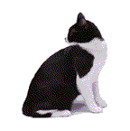

.gif) Do our cats talk to us? Do our cats talk to us?
Do our cats talk to us? Do our cats talk to us? ╭────── · · ୨୧ · · ──────╮
Cats communicate for a variety of reasons, including to show happiness, express anger, solicit attention, and observe potential prey. Additionally, they collaborate, play, and share resources. When cats communicate with humans, they do so to get what they need or want, such as food, water, attention, or play. As such, cat communication methods have been significantly altered by domestication.
Cat vocalizations have been categorized according to a range of characteristics. In 1944, Mildred Moelk published the first phonetic study of cat sounds[4] and classified the 16 different vocal patterns into three main classes:
1. sounds produced with the mouth closed (murmurs – purring, trilling)
2. sounds produced when the mouth is first opened and then gradually closed (meowing, howling, yowling)
3. sounds produced with the mouth held tensely open in the same position (growls, snarls, hisses, spits, chattering, and chirping).
Types of noises The purr is a continuous, soft, vibrating sound made in the throat by most species of felines. However, the reason why cats purr is still uncertain. Cats may purr for a variety of reasons, including when they are hungry, happy, or anxious.
The most familiar sounds of adult cats are "meow" or "miaow" (pronounced /miˈaʊ/). The meow can be assertive, plaintive, friendly, bold, welcoming, attention-soliciting, demanding, or complaining. It can even be silent, where the cat opens its mouth but does not produce any sound.
The chirr or chirrup sounds like a meow rolled on the tongue. It is commonly used by mother cats to call their kittens inside the nest. As such, kittens recognize their own mother's chirp, but they do not respond to the chirps of other mothers.

╰────── · · ୨୧ · · ──────╯